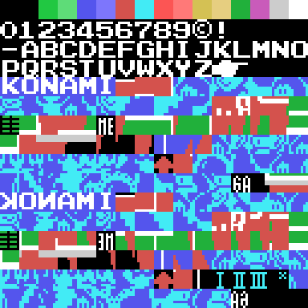
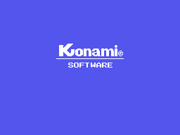

What turned up when we took it apart, with the measurement next to each thing.
The routine at 0x7060 copies from VRAM to VRAM passing each byte through 0x47A6, which reverses its eight bits:
L_47A6: push bc / ld c,a / ld b,008h
L_47AA: rr c / rla / djnz L_47AA
pop bc / retOut of the right of C and into the left of A: the tile backwards. And the loop that calls it, at 0x703B, restores the source with a pop on every pass and only advances the destination, so the same chunk is mirrored into all three thirds of the screen.
That is 768 bytes mirrored on the court and 512 more on the title background. You can see it in the pattern sheet:

Where the first third reads KONAMI, the mirror reads IMANOK.
The second decompressor, 0x5E9B, starts like this:
inc hl / ld e,(hl) / inc hl / ld d,(hl) / ex de,hl HL = the block
ld e,(hl) / inc hl / ld d,(hl) / ex de,hl / inc de HL = the destinationIt is not handed the block: it fetches it from a pointer, and that pointer sits right behind each frame's sprite data. A frame is therefore:
[dy, dx, pattern] per sprite, an 0x81 if it uses fewer, and the pointerThat accounts for the 3,135 bytes of 0x73A7..0x7D25, and it checks out two independent ways:
Twenty frames for the near player, drawn with up to five sprites, and twenty for the far one, drawn with two or three.
The score is kept in binary-coded decimal -0x6760 adds with add a,001h / daa- and, read that way, the rules come out complete:
| rule | where |
|---|---|
| a game is won at 21 | cp 021h at 0x6891 |
| if both reach 21, the score resets | 0x6829 |
| deuce at 20-all | cp 020h at 0x6819 |
| the service changes every five points | 0x683D |
| ends change at 10 in the deciding game | 0x46C8 |
The service change is the neatest: 0x683D adds both scores, runs daa and checks whether the units digit is 0 or 5.
And the two-point-lead check accepts 0x02 and also 0x08. That is not a bug: the subtraction is binary over BCD, so 21 minus 19 gives 0x08 and is still two points. The two shapes a two-point gap can take, depending on whether there is a nibble carry.
0x6EAD is 92 bytes that climb from 12 to 255, come back down, pass through zero and climb again. That it is a sine is measured: the 31 values of the first quarter against 255·sin(i·90/31) are off by 4.7 at most, over a range of 255.
And the two places that read it -0x6E99 and 0x6EA3- sit 31 entries apart, which is exactly a quarter of a wave. One table gives both functions.
The two things that can vary are whether the destination is read from the script or arrives in HL, and whether the mask lets the bytes through or writes zeros. All four combinations have their own entry, and they take ten bytes between them:
0x4764 ld c,0ffh falling into 0x4766 header yes, paints
0x476C straight into the loop header no
0x475C ld c,0ffh / jr 0x476C header no, paints
0x4760 ld c,000h / jr 0x4766 header yes, ERASESWith the mask at zero the and c leaves the byte at zero: the very script that wrote the label erases it, keeping its shape.
0x4A2F draws it one row higher on each pass -0xFFE0 is minus 0x20- and on each one lays down three runs of consecutive patterns: three from 0x40, eleven from 0x43 and twelve from 0x4E, plus twelve zeros that wipe the previous pass.

Fourteen passes, starting from the bottom row.
0x4013 writes to 0x40EE and 0x4052 to 0x40F8. Both addresses fall inside the ROM itself, which cannot be written: the two lds run on every game and change nothing.
Not similar: the same, piece by piece. The dispatcher with the table glued behind it, the two 8-over-16-bit adds, the label interpreter, the decompressor and its thirds loop.
And the eight VDP register bytes are identical, one by one: 02 E2 0E 7F 07 76 03 E4. There they live at 0x46A9 and here at 0x47D6. VRAM being the other way round is therefore not a finding of this cartridge: it is one more piece of the skeleton the two of them share.
Four drawing errors that looking at the picture did not catch, and that only came out from comparing byte for byte against the emulator's VRAM:
hl,00008h, which in this layout is the COLOUR table: the fifteen tiles it fills are flat rectangles of colour, and that is where the court's red floor comes from. Read as patterns, the screen came out black.After all four, the logo and the table match the emulator's VRAM with zero bytes different, and the title screen with just one, the eighth of the small "KONAMI": the dump catches that animation half-way through.